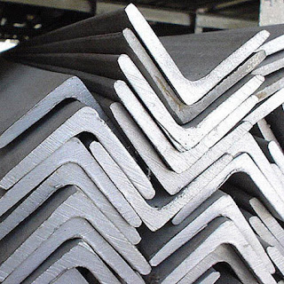
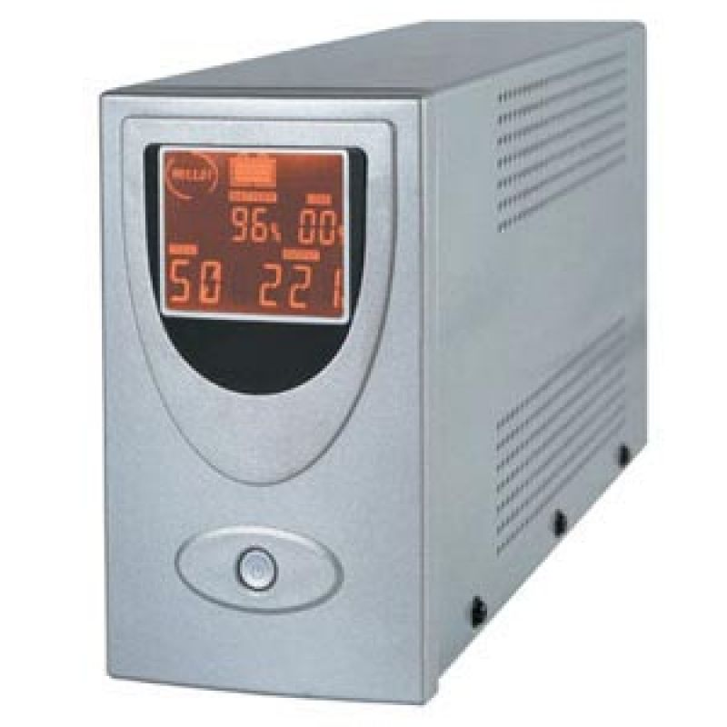

Jual Floor Deck Harga Murah di Makassar ☎ 0822 4582 0777 (Rinanti)
Salah satu komponen terpenting dari sebuah bangunan baik itu kecil, sedang, besar maupun megah sekalipun pasti memerlukan atap. Tergantung setiap kebutuhannya, bagi bangunan yang megah mungkin beton akan menjadi pilihan. Keberadannya pun sudah menggeser kayu dan bahkan sewaktu-waktu dapat menggantinya. Disini, galvalum mempunyai peran penting sebagai atap sebuah bangunan. Selain atap, adapula rangka atap yang berfungsi sebagai penyangga atap. Tidak tertarik dengan galvalum? Maka masih tersedia genteng metal yang akan saya bahas di pertemuan kita kali ini. Penasaran seperti apakah fungsi galvalum sebagai atap? Silakan simak artikel berikut ini.
Distributor & Supplier Floor Deck (Bondex)

Floor deck ini adalah material yang bisa difungsikan sebagai media pengganti dari material konvensional yang umumnya berbentuk papan lebar, misalnya saja seperti triplek. Floor deck atau yang biasa disebut bondek adalah material yang berfungsi sebagai penyangga lantai cor. Menggunakan Floor Deck bisa mengurangi pemakaian perancah serta tiang-tiang penyangga sehingga akan lebih menghemat biaya. Sedangkan untuk panjang dan juga lebarnya ada beberapa variasi.
Jika anda ingin mengetahui lebih lanjut mengenai floor deck Makassar ini, anda bisa langsung mengunjungi dis.or.id. Disana anda bisa mendapatkan floor deck Makassar yang anda inginkan dan tentunya dengan harga yang jauh lebih murah di bandingkan dengan tempat lainnya.
Info Pemesanan Selengkapnya
Google Maps: https://www.google.com/maps/d/u/0/viewer?mid=1vSGA7eD7ctB-ierGsro9yf6LdDAQHeLS&ll=-6.2537250295094555%2C106.82745&z=15
Note: https://www.facebook.com/notes/distributor-of-industrial-supply/kontraktor-jasa-floor-hardener/1783168878649658/
Event: https://www.facebook.com/events/534395173592364/
Portfolio Produk: https://www.facebook.com/1681607345472479/photos/?tab=album&album_id=1685055588460988
Distributor & Supplier Besi Beton

Ada beberapa jenis material konstruksi yang ditawarkan, seperti besi beton dengan kualitas yang terbaik. Bentuk besi beton ulir yang berupa sirip dapat meningkatkan daya lekat guna menahan pergerakan dari batang secara relatif terhadap beton.
Besi beton polos sangat jarang digunakan kecuali digunakan sebagai kolom.
Salah satu cara untuk mendapatkannya adalah dengan membeli di dis.or.id. Anda bisa langsung mengunjungi dis.or.id. Kualitas dan mutunya pun telah terjamin. Jadi, anda tidak perlu ragu lagi.
Distributor & Supplier Steel Grating

Steel Grating kini dikenal sebagai salah satu produk yang bermanfaat untuk proses pembangunan. Cara menghubungkan bagian-bagian tersebut adalah dengan menggunakan pengelasan atau penguncian. Sehingga ketika Anda akan mencari Plat Grating bisa melakukan order pada toko bangunan penyedia barang ini. Steel Grating yang terbuat dari baja berkualitas ini dilapisi dengan Galvanis.
Kini anda bisa mendapatkan steel dengan mengunjungi dis.or.id. Disana anda bisa mendapatkan steel grating dengan berbagai ukuran tertentu dengan harga yang sangat terjangkau namun berkualitas dan bermutu tinggi.
Distributor & Supplier Pipa (Hitam/Gas, Galvanis)

Kekuatan dari pipa hitam gas ini memang sangat kuat, tak heran bila untuk kebutuhan konstruksi bangunan yang berat material ini tidak pernah absen. Pipa hitam banyak sekali diaplikasikan pada area pertambangan minyak gas karena ia memiliki struktur yang 3 kali lebih kuat dari jenis pipa biasa. Kebanyakan orang memanfaatkan pipa hitam ini pada area pertambangan gas dan minyak, sebagian orang pun bahkan mengira bahwa nama asli dari pipa hitam memanglah pipa gas. Karena sudah terlapisi dengan stainless steel pipa ini dapat diaplikasikan pada segala kondisi cuaca di Indonesia. Pipa hitam gas terjual dengan berbagai ukuran, ukuran paling kecil yang tersedia adalah ½ inc dan paling besar 40 inc. Hubungi segera kontak yang telah tersedia untuk informasi lebih detail, kami menerima segala kebutuhan besi baja anda kapanpun dan dimanapun.
Distributor & Supplier Kawat Bronjong/Gabion

Kawat bronjong dikenal sebagai anyaman yang terbuat dari kawat di mana tujuannya agar tebing yang tinggi tidak longsor. Ini seperti halnya kawat lainnya. Selain itu, sebenarnya kawat bronjong ini juga bisa dikatakan sebagai pemerkuat bukit. Hanya saja, Anda harus tahu kawat ini terbuat dari baja. Namun, banyak yang tidak tahu jika ternyata kawat bronjong ini juga digunakan sebagai pelabis tiang penyangga jembatan. Maka dari itu, kekuatannya untuk menahan tebing tinggi yang mungkin bisa longsor tidak perlu dipertanyakan lagi. Tujuannya agar tidak mudah tergerus ketika adanya arus air.
Disana anda bisa mendapatka kawat dengan harga yang cukup terjangkau dengan kualitas terbaik yang dimilikinya.
Distributor & Supplier WF H-beam

Saat ini, jenis besi WF memang banyak dicari. Konstruksi baja banyak yang memakai besi ini untuk bahan bajanya. Entah dari sisi kekuatan tekan nya atau tariknya.
Maka dari itu, kualitasnya sudah terjamin.
Kini anda bisa mendapatkan besi WF dengan kualitas terbaik dan mutu terjamin. Disana terdapat berbagai ukuran dari besi WF yang bisa anda pilih sesuai dengan kebutuhan anda.
Distributor & Supplier Expanded Metal

Expanded metal ini bisa dibilang sebagai hasil dari kemajuan teknologi yang terbuat dari baja berkadar karbon rendah dengan kekuatan yang lebih tanpa harus di las serta tanpa menggunakan sambungan. Dimana Expanded Metal ini dibuat dengan menggunakan baja berkadar karbon rendah tanpa di las, tanpa sambungan dan dikenal lebih kuat. Beberapa keunggulan yang ditawarkan oleh expanded metal seperti ini adalah dikenal memiliki bentuk yang indah serta homogen, relatif lebih ringan, lebih vareatif dalam hal pengaplikasiannya, dan mudah sekali dipasang. Selain itu, Expended Metal juga dikenal mampu menahan beban berat, memiliki permukaan yang anti slip/tidak licin, dan juga dikenal tahan karat untuk material yang dari alumunium.
Kini anda bisa mendapatkan expanded metal dengan kualitas dan mutu yang telah terjamin di dis.or.id. Terdapat berbagai ukuran dari expanded metal yang bisa anda pilih dan anda pesan sekarang juga. Kunjungi dis.or.id untuk memesan expanded metal dengan harga yang murah serta mutu yang terjamin.
Distributor & Supplier Plat (Hitam, Kapal, Bordes, Strip)

Material Plate kapal padadasarnya dilihat dari segi penampakan Fisiknya sama dengan plat hitam mempunyai warna yang hitam akan tetapi,ada perbedaan dari ukuran dimensi dan kandungan kimianya dikarenakan fungsinya dan aplikasinya yang berbeda. Dengan membeli secara online, anda akan lebih efektif dan efisien dalam melakukan pemesanan.
Jika anda sedang mencari plat hitam, bordes, kapal dan jenis plat lainnya. Anda bisa langsung saja mengunjungi dis.or.id. Disana terdapat berbagai macam plat yang anda butuhkan dan pastinya dengan harga yang sangat terjangkau.
Distributor & Supplier Atap Galvalum

Saat ini bangunan modern minimalis dan properti sudah sering dijumpai menggunakan atap galvalum. Sifat galvalum yaitu ringan dan tipis namun memiliki kualitas tinggi.
Ada yang menjual per m2 tapi ada pula yang menjual dengan sistem lembaran. Banyak sekali jenis atap galvalum yang bisa kita dapatkan di pasaran. Kerap kali disebut baja ringan, kekuatannya tidak kalah bila dibandingkan dengan baja konvensional.
Galvalum diklaim mempunyai daya tahan karat 4x lebih kuat dari galvanis. Ini adalah kekeliruan besar, atap galvalum berbeda dengan atap seng. Ini dikarenakan seng menyebabkan rumah anda menjadi terasa panas. Disini kami menyediakan galvalum yang tentunya sesuai kebutuhan dan dengan harga yang sangat kompromi khusus untuk anda yang membutuhkannya. Atap galvalum mempunyai banyak tipe, jenis dan ukuran yang sesuai dengan ukuran yang dapat anda pilih.
Distributor & Supplier Atap Lengkung

Dewasa ini, atap lengkung sangat dibutuhkan bagi berbagai macam jenis bangunan. Atap haruslah mempunyai sifat kedap air sehingga air hujan tidak akan merembes kedalam bangunan tersebut.
Bila atap sudah bocor maka kualitas dari atap tersebut akan diragukan. Salah satu jenis atap galvalum yang sekarang sedang populer adalah atap lengkung. Jarang sekali kami melihat bahwa atap galvalum lengkung ini dapat jatuh karena tiupan angin kencang.
Penggunaan atap lengkung contohnya adalah pada pembuatan atap stadion. Bahkan tidak sedikit yang rela mengeluarkan gocek yang tidak sedikit mengingat harganya yang sedikit lebih mahal dibandingkan atap galvalum dengan model biasa. Atap dengan kualitas baik adalah atap yang kuat menahannya derasnya iklim dan cuaca. Bila anda ingin mengetahui harga dari setiap jenis atap lengkung maka anda cukup menghubungi kontak yang tertera pada website dis.or.id. dis.or.id adalah distributor terpercaya untuk anda. Kami menyediakan atap lengkung sesuai dengan keinginan anda. Kami merekomendasikan dis.or.id sebagai tempat untuk anda bisa mendapatkannya.
Distributor & Supplier Truss Canal C
Anda pasti mengetahui bahwa truss atau besi kanal c ini tahan terhadap rayap. Jadi, galvalum adalah salah satu jenis baja terbaik dimana memiliki cirikas ringan dan tipis namun memiliki daya tahan, dan kekuatan yang sangat baik bahkan di klaim lebih baik bila kita bandingkan dengan baja konvesional. Oleh karena itulah besi ini menjadi buruan dan primadona bagi sebagian orang. Tidak heran bila saat ini besi ini lebih banyak diminati, selain karena mudah didapatkan, memiliki kekuatan yang sama, tahan lama juga karena harga yang dinilai lebih ekonomis. Besi kanal C ini selain digunakan untuk konstruksi bangunan dalam pembuatan atap, juga bisa juga dan banyak juga yang menggunakan nya sebagai bahan otomotif, seperti kerangka mobil, sepedamotor dan onderdil lain nya. Besi ini tidak dibuat oleh tukang las biasa, melainkan di olah oleh pabrik yang khusus bergerak dibidang peleburan besi dan logam. Namun karena semakin susahnya mendapatkan raw materialnya, dan harga yang semakin ahal maka pemilihan besi kanal C menggantikan fungsi kayu dinilai adalah langkah yang tepat. Bila anda mencari besi kanal c dengan kualitas tinggi namun harga terjangkau maka anda sudah datang ke tempat yang tepat. Disini kami menyediakan berbagai macam kanal c dan truss sesuai dengan kebutuhan anda.
Distributor & Supplier Hollow Galvalum

Hollow galvalum menjadi primadona bagi banyak orang dikarenakan uniknya komponen berikut ini. Kayu pun sudah digeser, dikarenakan keberadaan hollow galvalum ini. Namun dominasi bahan sebagian besar menggunakan alumunium dengan presetase rata rata 55%.
Bila anda ingin membeli Hollow galvalum dengan harga terjangkau dan tentunya kualitas terjamin, simak ulasan kami ini. Ukuran hollow galvalum plafon yang paling bagus untuk digunakan yaitu ukuran 2X4 dengan tebal 0,25. Pastikan untuk menghubungi kami saat ini juga. Kami akan mengirim barang pesanan anda sampai pada tujuan dengan aman, cepat dan tepat tujuan.
Distributor & Supplier Seng Gelombang

Apakah anda hendak mendirikan bangunan baru? Sebuah bangunan dapat berdiri tegak kokoh dan bernilai bukan cuman karena dinding dan permukaan lantainya saja. Ia lebih mudah di pasang dan harga jual yang ekonomis dipasaran membuat seng gelombang memiliki banyak peminat. Seng gelombang memiliki banyak keunggulan dari berbagai sisi. Seng gelombang warna memiliki banyak keunggulan dari segi manapun, anda bahkan tak perlu lagi melakukan cat ulang pada seng gelombang atap yang jenis ini. Sedangkan sekarang ini telah tersedia berbagai macam atap bangunan berbentuk seng gelombang yang memiliki banyak keunggulan, baik dilihat dari fungsi maupun harga jual pasarnya.
Seng gelombang sekarang ini diburu banyak masyarakat untuk menutup bagian atap bangunan mereka. Meskipun mahal, namun kami yakin bahwa anda tidak akan menyesal dengan berbagai jenis seng gelombang yang tersedia.
Distributor & Supplier Plat Seng

Plat seng dan plat galvalum banyak digunakan untuk berbagai kebutuhan, dari kebutuhan pembangunan rumah, industri, pabrik dan berbagai kegunaan lainnya. Selain itu manfaat dan kelebihan yang dimiliki jauh lebih banyak dari seng biasa.
Banyak orang yang selama ini hanya membeli seng galvalum tanpa mengetahui ukuran yang sesuai dengan kebutuhan nya. Plat seng dan plat galvalum banyak digunakan untuk berbagai kebutuhan, dari kebutuhan pembangunan rumah, industri, pabrik dan berbagai kegunaan lainnya. Selain lebih hemat, juga anda tidak harus membuang bagian yang tersisa.
Lalu berapa harga plat galvanis 2018? Bila anda sedang mencari harga terbaru hari ini juga, anda dapat menghubungi kami karena kami menjual plat galvanis, galvalum dengan berbagai ketebalan dan ukuran.
Distributor & Supplier Genteng Metal

Kami adalah distributor genteng metal, tersedia berbagai ukuran dan varian genteng metal. Sebelum itu, kami akan menjelaskan apa itu genteng metal dan genteng metal pasir. Namun sedikit demi sedikit orang mulai lebih memilih genteng metal karena lebih banyak kelebihan yang dimilikinya. Selain itu genteng metal dinilai lebih anti bocor. Produk SNI kami sudah dijamin keasliannya dan tidak KW. Jika anda masih agu lagi, kami sarankan untuk anda untuk mengubungi kami secara langsung.
Apakah anda mencari genteng metal? Silakan kunjungi official site dis.or.id dan temukan info menarik untuk anda. kami berusaha mencari kepuasan pelanggan kami.
Distributor & Supplier Besi Wiremesh

Jika anda membutuhkan besi lonjor yang membentuk anyaman anda dapat membeli jenis besi wiremesh pada kami. Besi wiremesh sering di anggap banyak orang adalah besi anyam karena strukturnya yang mirip dengan anyaman. Struktur dari besi anyam sendiri ada yang membentuk kotak dan jajar genjang, anda bisa memesan kebutuhan wiremesh ini sesuai kebutuhan. Besi wiremesh bisa anda manfaatkan untuk berbagai kebutuhan, misalnya saja untuk kebutuhan konstruksi penguat dak beton, plat lantai, dan juga anak tangga. Setiap jenis besi wiremesh diperuntukkan untuk kebutuhan yang berbeda-beda, untuk itu anda harus memilih jenis wiremesh sesuai dengan kekuatannya. Untuk ketebalan besi wiremesh 8 – 10 adalah peruntukkan untuk bangunan bertingkat. Sementara ketebalan 4 – 6 dimanfaatkan untuk bangunan biasa. Jika anda membutuhkan besi ini, segera hubungi kami dikontak yang tersedia.
Distributor & Supplier Pagar BRC
.jpg)
Potongan besi berdiameter tertentu tersebut dig abungkan dengan bantuan mesin las wiremesh. Pemanfaatan pagar BRC sendiri tergolong sebagai pagar minimalis yang siap digunakan untuk melindungi sebuah bangunan. Untuk melindungi sebuah bangunan, kekuatan pagar BRC sangat dapat diandalkan karena ia diproduksi dengan baja bertegangan tinggi dengan tegangan ijin 2900 kg/cm2, kekuatannya bahkan 2,5 kali lipat dibanding jenis besi biasa. 5 kali dari kekuatan besi biasa. Bagi anda yang sedang membutuhkan pagar BRC, kami menawarkan produk ini bagi anda! pagar BRC dengan kualitas mutu terbaik dan harga yang murah. Bagi anda yang membutuhkan pagar BRC anda dapat menghubungi kami untuk informasi pemesanan.
Distributor & Supplier Kawat Loket, Kawat Harmonika

Apakah anda membutuhkan kawat untuk penyekat? Kawat pagar? Penutup jendela? Atau kebutuhan lainnya? Untuk kebutuhan seperti ini anda bisa gunakan kawat loket harmonika yang memiliki bentuk seperti anyaman dan kuat. Untuk kehidupan sehari-hari kawat harmonika banyak digunakan untuk keperluan rumahan, konstruksi, dan industri. Apalagi bila jenis kawat harmonika yang digunakan adalah galvanis yang terkenal tahan karat maupun korosi sehingga sangat awet.
Distributor & Supplier CNP & UNP

Selain sebagai material konstruksi sambungan, besi kanal U banyak digunakan untuk kebutuhan penutup dinding / girts. Dilihat secara sekilas, spesifikasi dari besi UNP hampir mirip dengan besi WF. Jika besi UNP dimanfaatkan untuk keperluan penutup sebuah dinding karena bentuknya melengkung seperti huruf U, beda halnya dengan besi CNP yang sering disebut sebagai balok purlin. Besi CNP dan UNP ini sangat fleksibel, ia bahkan dapat dimodifikasi dengan plat koil yang menggunakan sistem cutting, sehingga tak heran bila banyak orang memesan jenis besi ini. Pemanfaatannya bahkan bisa untuk keperluan otomotif.
Distributor & Supplier Besi Siku

Setiap konstruksi bangunan pasti menggunakan material konstruksi besi siku ini untuk kebutuhan bagunan. Ukuran panjang dari besi siku yang kami sediakan adalah panjang 6 meter, dan ketebalan yang bisa anda sesuaikan dengan kebutuhan. Produk besi siku yang kami tawarkan cocok untuk beragam keperluan, baik rumahan, konstruksi, industri dan sebagainya. Besi siku yang kami produksi cocok untuk berbagai kebutuhan, baik konstruksi bangunan sampai furniture rumahan. Informasi lebih detail akan anda dapatkan dengan menghubungi kontak yang tertera pada website dis.or.id.
Distributor & Supplier Hollow (Hitam, Galvanil, Galvanis)

Sekarang ini besi hollow pemanfaatannya sudah melebihi kayu, meskipun terbuat dari besi kualitasnya pun tidak dapat diragukan lagi.Sekarang sudah banyak orang yang beralih pemanfaatan dari kayu menjadi menggunakan besi hollow.Banyak orang yang mulai beralih dari pemanfaatannya yang menggunakan kayu beralih pada hollow hitam galvanil.Besi hollow saat ini menjadi material pengganti kayu yang sangat baik. Dengan menggunakan material ini pembangunan konstruksi juga bisa selesai lebih cepat sehingga meminimalkan upah pekerja. Terdapat besi hollow dengan berbagai ukuran yang bisa anda pesan langsung, misalnya: ukuran besi hollow 40 x 40 x 2 mm x 6 Meter, 50 x 50 x 3 mm x 6 meter hingga ukuran 150 x 150 x 5 mm x 6 meter.Segera hubungi kontak kami untuk info lebih lanjut. anda dapat memesan besi hollow hitam galvanil galvanis tersebut dengan berbagai ukuran, baik ukuran besi hollow 40 x 40 x 2 mm x 6 Meter, 50 x 50 x 3 mm x 6 meter sampai dengan ukuran 150 x 150 x 5 mm x 6 meter. Kami menyediakan besi hollow hitam dengan ukuran 40, 50, 150 dan lain sebagainya dengan panjang rata-rata 6 meter. Untuk anda yang membutuhkan besi ini, kami menyediakan ukuran besi hollow yang variatif 40 x 40 x 2 mm x 6 Meter, 50 x 50 x 3 mm x 6 meterr sampai dengan ukuran 150 x 150 x 5 mm x 6 meter. Besi hollow bisa dimanfaatkan untuk berbagai keperluan, misalnya seperti pagar, pintu besi, teralis, dan masih banyak lagi. Jika anda membutuhkan besi hollow maka sebelum memesan pada kami anda harus melakukan perhitungan kebutuhan dahulu, seperti berapa panjang dan ketebalan yang diperlukan.
Distributor & Supplier Pipa Pancang

sedangkan untuk ukuran maupun spesifikasi yang di sediakan pun berbeda-beda sehingga Anda bisa dengan mudah menyesuaikannya. Tidak dapat di pungkiri lagi, fungsi pipa pancang ini sangatlah penting. sedangkan dari segi spesifikasi maupun ukuran, pipa pancang cukup variatif dan bisa di sesuaikan dengan kebutuhan. Di sini Anda aka mendapatkan pipa dengan kualitas terbaik dan mutu terjamin. Dengan demikian, ketika di gunakan pun bisa semakin maksimal. Sedangkan untuk kualitas pipa pun akan sangat terjamin dengan mutu terbaik.
Jasa Pondasi Bor (Strouss/Borepile)

Kalau menyebut pondasi bor, tentu saja tidak asing lagi jika dalam setiap pembangunan akan di butuhkan hasil maksimal termasuk dalam hal ini. Nah, jika Anda bingung terkait hal itu, kini ada banyak jasa yang bisa menjadi jalan keluar Anda dalam pelayanan pondasi bor. Sedangkan untuk kualitas hasil pengeboran nya pun tidak perlu di pertanyakan karena bisa di jamin sempurna dan sangat tinggi. Apalagi mengingat pelakunya adalah mereka yang sudah profesional dan sangat berpengalaman. Dalam prosesnya, pengeboran ini akan menimbulkan suara bising karena mesinnya yang sedang bekerja. Selain penggunaan jasa pondasi bor, Anda bisa memiliki mesin sendiri.
Distributor & Supplier Genset (New/Second)

Sejauh ini, genset atau generator set uang sudah banyak di aplikasi kan dengan bahan bakarnya yang berupa solar tentu saja juga sudah cukup terkenal. Sedangkan dalam pengaplikasian tersebut, tenaga dari genset di hasilkan dari bahan bakar solar. Dan kedua jenis tersebut bisa di dapatkan di DIS.
Oleh karena itu tidak sedikit yang memilih membeli genset bekas. sedangkan dari segi merk, genset sendiri juga cukup variatif.
Distributor & Supplier UPS

Hanya saja, yang tidak mengetahui nya pu juga cukup banyak. Dalam hal inI tentu saja akan sangat penting untuk memilikinya. UPS ini terdiri dari beberapa jenis. Sedangkan segi varian nya bisa jadi adalah kualitas UPS sendiri maupun kapasitas yang di miliki. Sedangkan untuk pembeliannya, Anda bisa mendapatkan barang di DIS.
Distributor & Supplier Forklift (Second)

Di dunia industri, tentu saja penggunaan forklif juga tidaklah asing. Termasuk untuk forklif yang dalam kondisi bekas. Jika tidak ingin yang baru pun Anda bisa memilih forklif yang di jual bekas. Sedangkan di sini, Anda bisa menemukan penjualan tersebut dengan kualitas barang yang memuaskan sekalipun merupakan barang second. Kalau untuk kualitasnya sendiri, meski bekas tetap saja terjamin. Jika sudah mengetahui kualitasnya yang terjamin tersebut, tentu saja segala aktifitas industri akan menjadi semakin mudah lagi.
Jasa Pembuatan Moulding Inject

Anda sedang bingung untuk membuat plastik yang tepat sebagai wadah salah satu produk Anda, maka jangan khawatir karena banyak jasa yang bisa di manfaatkan untuk pembuatannya termasuk di DIS. Selain itu, masalah kualitas pun juga tidak kalah karena moulding inject yang di hasilkan memiliki kualitas terbaik. Selain itu dari segi kualitas pun juga merupakan moulding dengan kualitas yang tinggi.
Jasa Pembuatan Sparepart Mesin Produksi / Alat Berat

Sparepart tentu saja sudah tidak asing lagi di dunia permesinan. terkait akan hal itu, bisa di akui pula bahwa pembuatan mesin ini sangat penting untuk menjadi perhatian. Karena itulah, untuk memilikinya, silahkan Anda memilih jasa terpercaya di mana salah satunya di tawarkan di DIS. Perlu di ketahui pula bahwa dalam pembuatan ini memang tidak bisa sembarangan. Oleh karena itulah di butuhkan hasil berkualitas sehingga bisa bekerja secara maksimal. Mengenai alat berat, dalam pembuatannya memang tidak bisa sembarangan. Perbedaan harga tersebut bisa berdasarkan pada jenisnya yang berbeda maupun ukurannya.
Jasa Service Elektronik (Kompor Gas, Dispenser, Mesin Cuci)

Dengan semakin berkembanganya zaman, penggunaan elektro juga semakin banyak. Padahal sebenarnya banyak penawar jasa yang bersedia dan sanggup memperbaiki setiap kerusakan elektronik sebagai penyeimbang semakin bekembang nya teknologi. Jika Anda bingung di mana memperbaiki barang tersebut, bisa saja langsung merujuk pada salah satu jasa yang di tawarkan DIS. Untuk kualitas service yang di tawarkan, jangan khawatir karena kualitasnya sangatlah tinggi. Selanjutnya, untuk masalah kualitas, tidak perlu di pertanyakan lagi karena DIS akan memberikan jasa yang memiliki perhitungan tingkat perbaikan dan keamanan yang tinggi. Sedangkan untuk service ini sebenarnya tidak hanya untuk barang-barang bermasalah saja melainkan juga untuk pegecekan barang elektronik Anda sehingga akan tetap aman dan lancar di gunakan. Hanya saja kebanyakan orang memang melakukan service elektronik saat ada keluhan yang di rasakan saja.
Karena tanpa atap, maka sebuah bangunan akan kehilangan jati dirinya sebagai bangunan yang sebenarnya. Memang, ada beberapa bangunan mewah yang sudah memakai beton sebagai atapnya. Karena tujuan utama dari rumah adalah menaungi pengguna yang ada di dalamnya. Terima kasih, semoga artikel tersebut bermanfaat. Jangan lupa untuk mengujungi official site kami dis.or.id dan dapatkan info & penawaran menarik seputar atap dan masih banyak lagi bahan bangunan yang lain.